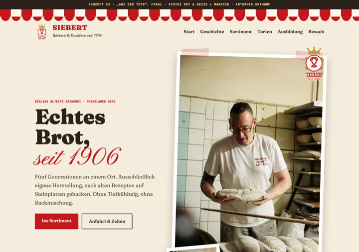
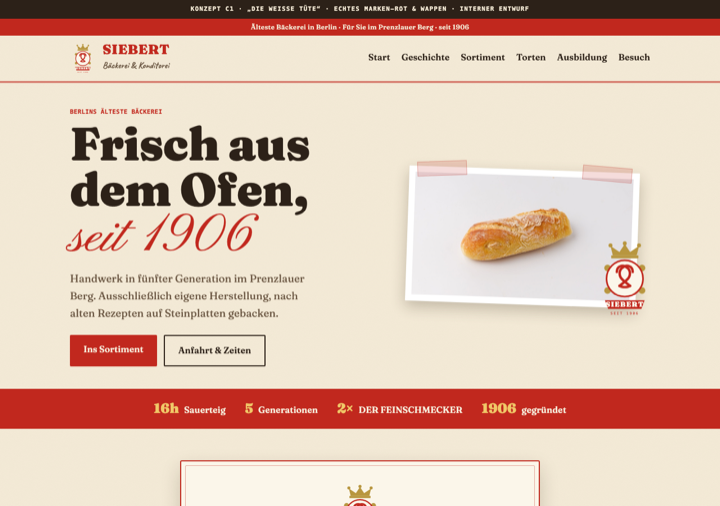
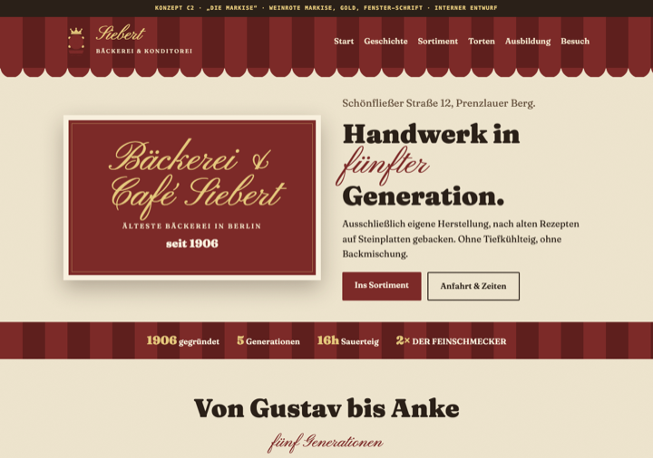
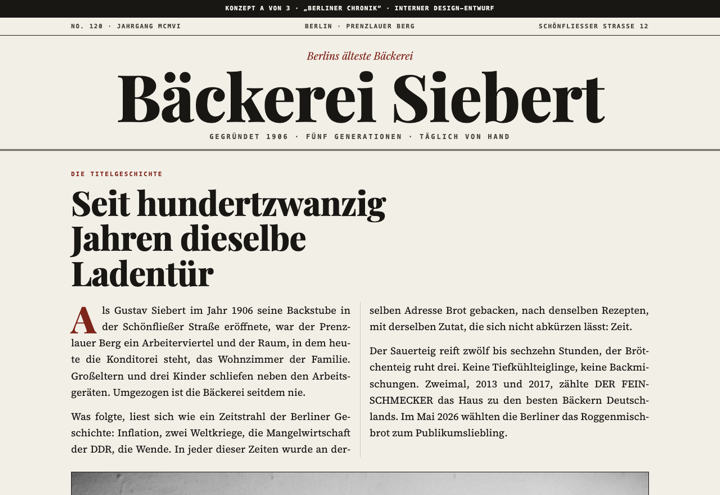
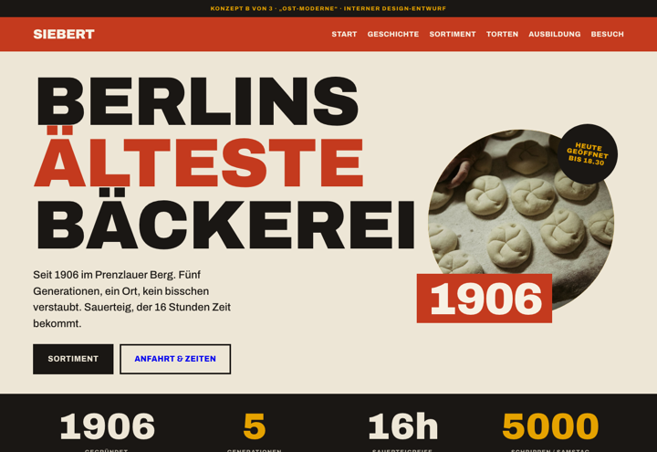
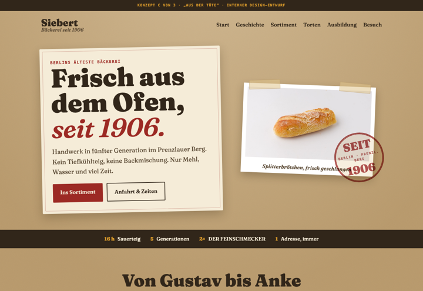

Bewusst verschieden, damit du am Kontrast festmachen kannst, was zieht und was nicht. Gleiche Inhalte, gleiche Fotos, unterschiedliche Handschriften.
Jede Richtung ist als Startseite mit Hero, Geschichte und Sortiment gebaut (noch nicht die vollen sechs Seiten). Die gewählte Richtung wird danach komplett ausgebaut. Klick auf „Öffnen“ zeigt die echte, scrollbare Seite.
★ Aktueller Stand · zwei Richtungen nach deinem 2. Feedback + Recherche
Beide behalten den warmen, verspielten Charme, sind aber „runder": Basis aus Brot-/Krustentönen bzw. Tüten-Weiß, Rot nur als feine Linie (Schürzen-Bordüre, keine dicken Streifen), Gold nur auf Dunkel (wie ihre Fensterschrift). Ebenen durch Überlappung, leichte Drehung und echte Schatten statt Klebeband (Prinzipien u.a. von Zingerman’s Deli, Rose Bakery, Balthazar). Kleinerer, collagierter Hero.
Frühere Rot-Weiß-Versuche (C3 Markise · C1 Tüte · C2 Fenster)

Zu laut, Klebestreifen zu künstlich, Hero zu groß (dein Feedback). D1 löst das ab.
Öffnen

Ganz andere Richtungen (zum Vergleich)

Wie eine Zeitungsseite: Serifen, Spalten, Haarlinien, Schwarzweiß-Fotos. Die 120 Jahre werden erzählt, nicht animiert. Ruhig, seriös, archivwürdig.
Öffnen
Plakativ und grafisch: Ziegelrot, Senfgelb, fette breite Grotesk, Farbblöcke, harte Fotoschnitte. Die direkte Antwort auf den Einwand „Traditionsbäckerei gleich verstaubt“.
Öffnen
Analog und handgemacht: Kraftpapier, angeklebte Fotos, Gummistempel, Preiszettel, eine warme Serifenschrift. Fühlt sich an wie die Papiertüte vom Bäcker.
ÖffnenZum Vergleich die verworfene erste Fassung: „Zeit-Haus“ (v1)
Sag mir bei C1 und C2, was zieht und was nicht (Rot-Ton, Wappen, Schreibschrift, ein bestimmter Baustein). Mischen geht auch, etwa C1s Tüten-Aufdruck mit C2s Markise. Aus deinem Feedback wird die finale Richtung, die dann voll ausgebaut wird.